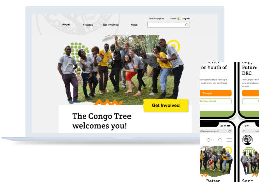

UX/UI Designer &
Creative Technologist
Case Studies

Redesigning and developing a new website for a non-profit based in the UK and Democratic Republic of Congo (DRC)

The Congo Tree is a youth development charity based in the Democratic Republic of Congo (DRC) and the UK. They equip young people in DRC with transferable life and leadership skills, support them with mentoring and encourage them to get involved in their community.
We conducted competitor analysis and used user research to learn more about pain points users faced when using TCT’s existing website. The Congo Tree were excited to work with us and also shared their brand guidelines and some wishes for their website.
During user testing, we discovered that users were confused about the information they were seeing on the website and unable to use it on a mobile device.
Therefore, we aim to improve information architecture, navigation and create a RWD solution.
Our redesign of the Congo Tree website will set out to achieve greater user engagement and allow the non-profit to share its values and goals with more users.
Honour the organisation’s identity and values
Found inspiration from other websites
Analysed TCT’s website, including accessibility and colours
During user testing and interviews, we discovered that users were confused about the information they were seeing on the website and unable to read large chunks of it.
Therefore, we believe that the website has poor information architecture and poor RWD when switching to mobile view. and that we might be able to help if we improve information architecture and create a RWD solution.
We conducted a series of 5s usability tests for users to get a feel for the initial prototype design, asking different users to perform the same tasks we set for the first usability test.
Once we got initial feedback we used it to iterate on our design when creating a completed clickable prototype. We found a number of issues regarding the footer and header colours and some layout, as well as issues with the layout (what and where) of the content on the page.
.svg)
The final homepage design includes an array of features from each of our designs.
Unlike the current website design, we aimed for a more simple and straightforward look where the user can scroll to find out more. Simultaneously, trying to give the user the information they’re finding without looking for it.